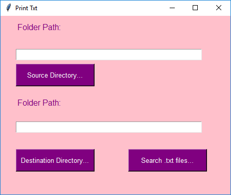

What can I contribute to your organization? Read below to find out.
This procedure shows the correlation between employees who get less than 30 hours of vacation annually with their year over year sales goals.
CREATE PROCEDURE min_vacation_sales
AS
BEGIN
SELECT Sales.SalesTerritory.Name, HumanResources.Employee.VacationHours, Sales.SalesPerson.SalesQuota, Sales.SalesTerritory.SalesLastYear, Sales.SalesTerritory.SalesYTD
FROM Sales.SalesPerson
INNER JOIN Sales.SalesTerritory
ON Sales.SalesTerritory.TerritoryID = Sales.SalesPerson.TerritoryID
INNER JOIN HumanResources.Employee
ON
Sales.SalesPerson.BusinessEntityID = HumanResources.Employee.BusinessEntityID
WHERE Sales.SalesTerritory.SalesYTD <= Sales.SalesTerritory.SalesLastYear
AND HumanResources.Employee.VacationHours < 30;
END
GO
EXEC [dbo].[min_vacation_sales];
Created with support from Bootstrap. Made for the Portland, Oregon based nonprofit, "Why I Rock". Learn more about their mission on the full website at WhyiRock.org.
Used Beautifulsoup to scrape www.theverge.com for the top three feature articles with photos and titles as a hyperlink back to article origin. The scraped information is passed to a simple html template in a “for” statement to display as a list in the browser.
VIEWS
class NewsScraper:
def __init__ (self):
content = requests.get('https://www.theverge.com/features').content
soup = bs(content, 'html.parser')
articles = soup.find_all('div', class_='c-compact-river__entry' ) # overall div class for articles
title_list = [] # list to iterate in below for loop.
url_list = []
img_list = []
for index in range(0,3): # for top 3 articles list the following
title_list.append(articles[index].h2.get_text())
url_list.append(articles[index].a['href'])
img_list.append(articles[index].noscript.img['src'])
all_list = zip(title_list, url_list, img_list) #group iterations through zip function
self.all_list = all_list
write a script that creates a GUI with a button widget and a text widget. Your script will also include a function that when it is called will invoke a dialog modal which will allow users with the ability to select a folder directory from their system. Finally, your script will show the user’s selected directory path into the text field. The script will need to use the askdirectory() method from the Tkinter module. have a function linked to the button widget so that once the button has been clicked will take the user’s selected file path retained by the askdirectory() method and print it within your GUI’s text widget

Python Ver: 3.7.0
import os
from tkinter import *
import tkinter as tk
from tkinter.filedialog import askdirectory
import sqlite3
import shutil
from datetime import datetime
def movefile(self):
srcdirect = os.listdir(self.source_path.get())
src = self.source_path.get()
for file in srcdirect:
if file.endswith('txt'):
shutil.move(file, self.dest_path.get())
def sqldata():
conn = sqlite3.connect('txtfile.db')
with conn:
cur = conn.cursor()
cur.execute("CREATE TABLE IF NOT EXISTS tbl_directory (ID INTEGER PRIMARY KEY AUTOINCREMENT, col_filename VARCHAR(75), col_date_time VARCHAR(75))")
conn.commit()
conn.close()
class ParentWindow(Frame):
def __init__ (self, master, *args, **kwargs):
Frame.__init__ (self, master, *args, **kwargs)
self.master = master
self.master.resizable(width=True, height=True)
self.master.geometry('{}x{}'.format(450, 350))
self.master.title('Print Txt')
self.master.config(bg='pink')
#self.master.protocol("WM_DELETE_WINDOW"), self.ask_quit)
arg = self.master
self.source_path = StringVar()
self.dest_path = StringVar()
#FILE NAME DISPLAY LABEL 1
self.lblsearch = tk.Label(self.master, text='Folder Path:', font=("Helvetica", 12), fg='purple', bg='pink')
self.lblsearch.grid(row=1, column=1, columnspan=2, padx=(30,0), pady=(10,0), sticky=W)
#FILE NAME DISPLAY TEXT BOX 1 SOURCE
self.txtSourceDir = Entry(self.master, width=40, font=("Helvetica", 12), fg='black', bg='white')
self.txtSourceDir.grid(row=2, column=1, padx=(30,0), pady=(0,20), sticky=W)
#FILE NAME DISPLAY LABEL 2
self.lblsearch = tk.Label(self.master, text='Folder Path:', font=("Helvetica", 12), fg='purple', bg='pink')
self.lblsearch.grid(row=3, column=1, columnspan=2, padx=(30,0), pady=(20,10), sticky=W)
#FILE NAME DISPLAY TEXT BOX 2
self.txtDestDir = Entry(self.master, width=40, font=("Helvetica", 12), fg='black', bg='white')
self.txtDestDir.grid(row=4, column=1, padx=(30,0), pady=(15,2), sticky=W)
#SEARCH BUTTON 1
self.btnSourceDir = tk.Button(self.master, text='Source Directory...', width=18, height=2, command=self.sourceDir, font=("Helvetica", 10), fg='white', bg='purple')
self.btnSourceDir.grid(row=2, column=1, padx=(30,0), pady=(60,0), sticky=W)
#SEARCH BUTTON 2
self.btnDestDir = tk.Button(self.master, text='Destination Directory...', width=18, height=2, command=self.destDir, font=("Helvetica", 10), fg='white', bg='purple')
self.btnDestDir.grid(row=6, column=1, padx=(30,0), pady=(30,0), sticky=W)
#Iterate Button
self.btnSearchTxt = tk.Button(self.master, text='Search .txt files...', width=18, height=2, command=self.input_file, font=("Helvetica", 10), fg='white', bg='purple')
self.btnSearchTxt.grid(row=6, column=1, padx=(250,0), pady=(30,0), sticky=W)
#FUNCTIONS
#FIRST TEXT FIELD
def sourceDir(self):
Sdirect = askdirectory()
print(self.txtSourceDir.insert(0,Sdirect))#prints to named text field
self.source_path.set(Sdirect)
#SECOND TEXT FIELD
def destDir(self):
direct = askdirectory()
print(self.txtDestDir.insert(0,direct))
self.dest_path.set(direct)
def input_file(self):
src = self.source_path.get()
dest = self.dest_path.get()
conn = sqlite3.connect('txtfile.db')
with conn:
cur = conn.cursor()
srcdirect = os.listdir(src)
for file in srcdirect:
if file.endswith('txt'):
timeMod = datetime.fromtimestamp(os.path.getmtime(src +'/' + file))
print(timeMod)
cur.execute("INSERT INTO tbl_directory (col_filename, col_date_time) VALUES (?,?);", (file, timeMod))
print(file)
conn.commit()
conn.close()
movefile(self)
#printmtime(self)
def ask_quit(self):
self.master.destroy()
os._exit(0) # deletes from memory so it does not store on users computer
if __name__ == "__main__":
sqldata()
root = Tk()
App = ParentWindow(root)
root.mainloop()
The message application takes in user input from an HTML template and imports into the database in the “MessageMod” table. Messages are received in the recipient user inbox as an ordered hyperlink list. Clicking the link takes the user to another html template to view message content.
MODELS
from django.db import models
from django.contrib.auth.models import User
class MessageMod(models.Model):
sender = models.ForeignKey(User, related_name="sender", on_delete=models.CASCADE)
reciever = models.ForeignKey(User, related_name="reciever", on_delete=models.CASCADE)
msg_sub = models.CharField(max_length=100, default='')
msg_content = models.TextField()
datesent = models.DateTimeField(auto_now_add=True)
URLS
from django.urls import path
from . import views
urlpatterns = [
path('message', views.message, name='message'),
path('inbox', views.inbox, name='inbox'),
path('alert', views.inboxAlert, name='alert'),
path('', views.inboxMessages, name='inbox-messages')
]
VIEWS
from django.shortcuts import render
from .models import MessageMod
from django.contrib.auth.models import User
from django.http import HttpRequest, HttpResponse
def message(request):
if request.method == 'POST':
subject = request.POST['subject'] # define where on template text will come from
content = request.POST['content']
reciever = request.POST['reciever']
sender = request.POST['sender']
reciever_used = User.objects.get(username=reciever) # gets User object from database based on input 'reciever'
sender_used = User.objects.get(username=sender) # gets User object from database based on input 'sender'
message = MessageMod() # create an object that will interact with database item MessageMod in models
message.msg_content = content #based on object define the above variables to associate with table rows in models
message.msg_sub = subject
message.msg_content = content
message.reciever = reciever_used
message.sender = sender_used
message.save()
return render(request, 'MessageApp/message.html', {'message': message})
else:
return render(request,"MessageApp/message.html", {})
def inbox(request):
if request.user.is_authenticated:
currentUser = request.user.id
messages = MessageMod.objects.filter(reciever_id=currentUser)
return render(request, 'MessageApp/inbox.html', {'messages': messages})
else:
return render(request, "MessageApp/inbox.html", {})
def inboxMessages(request, id):
currentUser = request.user.id
messages = MessageMod.objects.filter(reciever_id=currentUser)
return render(request, "MessageApp/inbox-messages.html", {'messages': messages} )